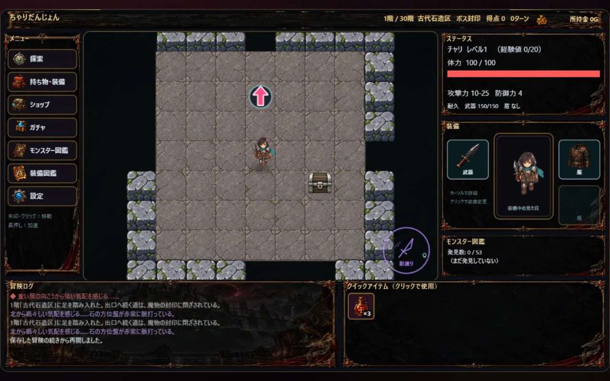

まずは、一歩。
PCでは矢印キー、またはマップをクリック。スマートフォンでは十字ボタンやマップのタップで移動。
←↑↓→

A TURN-BASED ROGUELIKE ADVENTURE
その一歩で、運命が変わる。
剣を手に、未知が眠る30階層の深淵へ。
PC / スマートフォン · ブラウザでプレイ · ダウンロード不要
THINK. CHOOSE. SURVIVE.
進むか。戦うか。いったん退くか。
ちゃりだんじょんは、自分のペースで一手を考える、ターン制ローグライク。
拾った武器を使いこなし、装備を育て、待ち受けるボスに挑もう。その選択が、次の階への道をつくる。
はじめての冒険ガイド

INTO THE DEPTHS
水路、氷の広間、灼熱の火山。
景色が変われば、戦い方も変わる。
行き着く先で、待ち受けるものは。
全30階層のダンジョン
BEYOND THE UNKNOWN
苔むす石壁の先、沈んだ砦へ。
凍てつく広間から、灼熱の戦場へ。
嵐を越え、万象の竜座を目指す。
FIND YOUR FIGHTING STYLE
一撃に賭けるか、間合いを制するか。
武器ごとのスキルが、戦いの可能性を広げる。
大剣・長剣・槍・弓・拳銃・短剣・双剣の7系統

THE RADIANT GREATSWORD
攻撃を当てるたび、HPを10回復する光の大剣。
周囲8マスを斬り、敵を1マス押し戻す。
YOUR FIRST STEP
覚えることは少なく。
試せることは、たくさん。
PCでは矢印キー、またはマップをクリック。スマートフォンでは十字ボタンやマップのタップで移動。
手に入れた武器や盾は「持ち物・装備」から。耐久を確かめ、相手に合った一品を選ぼう。
拾う・装備する・強化する歩いてスキルをチャージ。準備ができたらQキー、またはスキルボタンで武器の力を解き放とう。
冒険の続きは、同じブラウザから。保存した冒険はタイトル画面から再開できます。